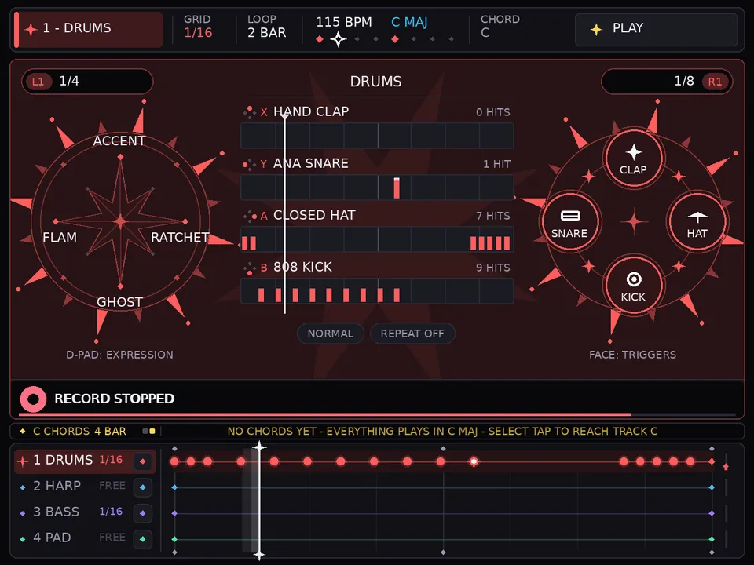
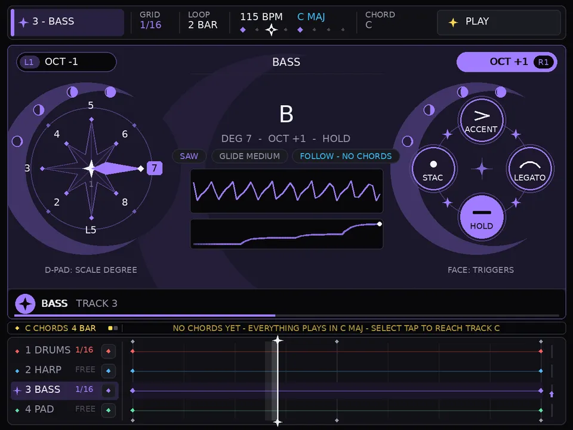
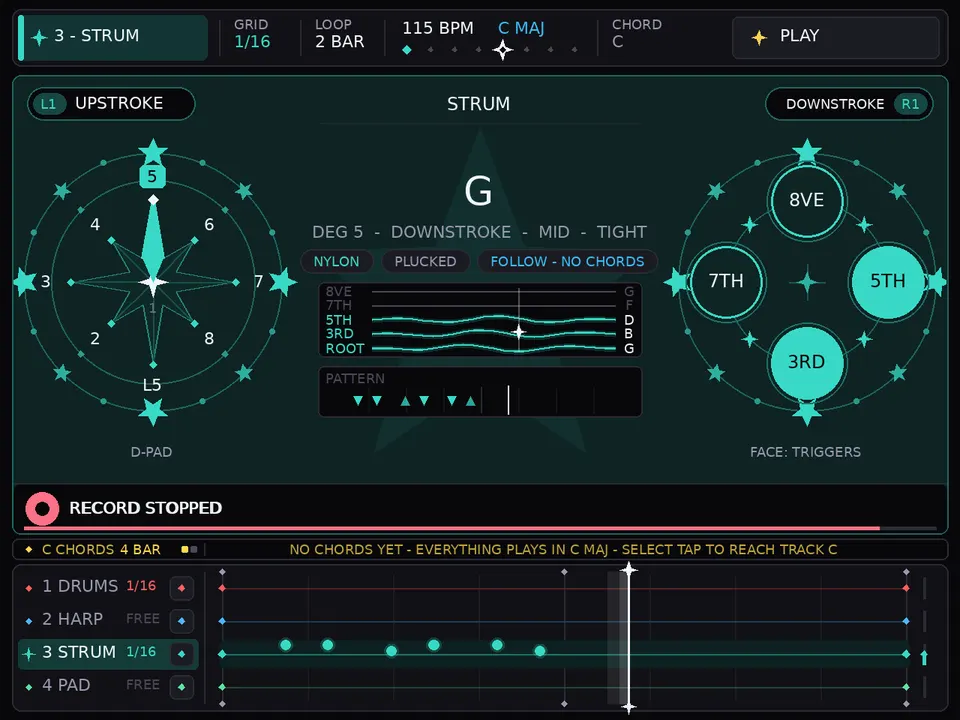
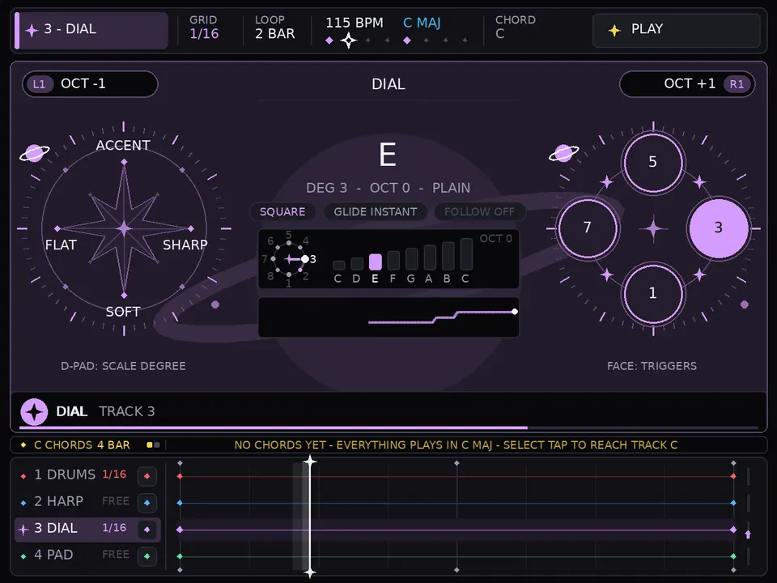
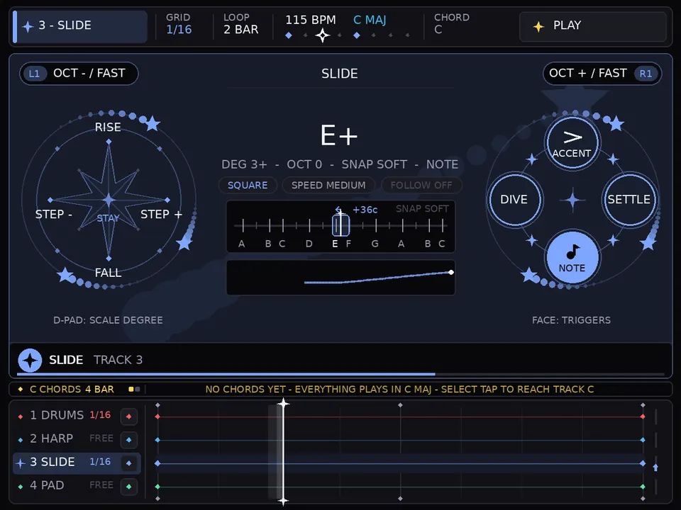
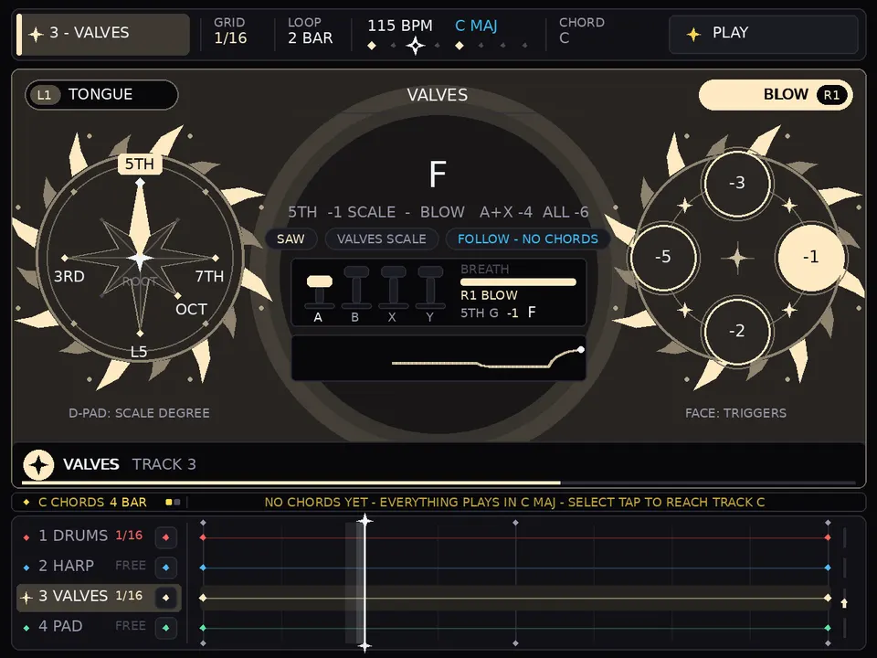
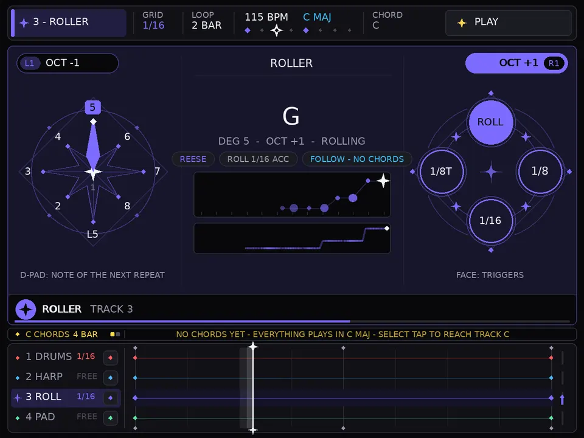
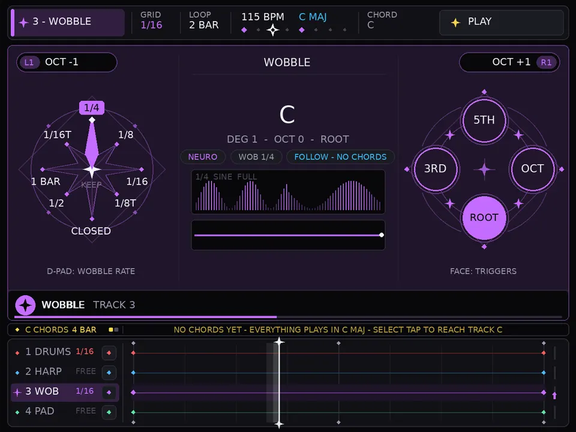
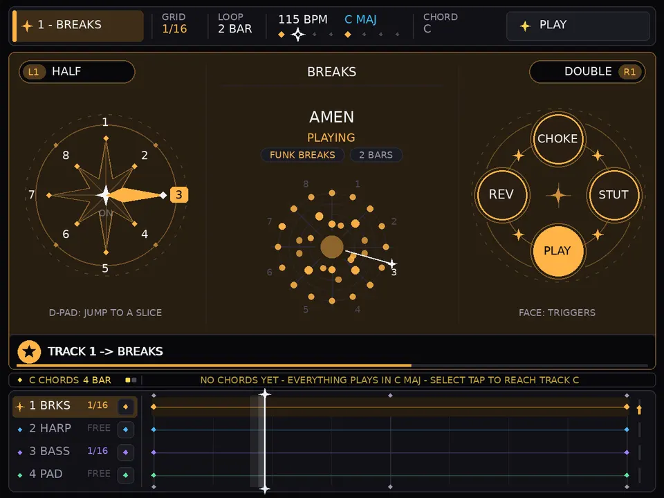

✦ A groovebox you explore with your thumbs
POCKIMUSI
POCK-ee-MOO-see · pocket + music
Every instrument turns the same D-pad and four buttons into a new way to play. You learn one by pressing buttons, not by reading menus.
Pick an instrument above to see what the D-pad, face buttons and shoulders do on it.
✦ Featured instruments
Chord harp
Choose a chord with the D-pad and strum it on the face buttons.

Drums
Four drums on four buttons. Hold a direction for accents, flams, ratchets or ghost notes.

Bass
Each direction is a scale degree. The face buttons choose how the note is played.

Strum
Pick the chord tones with your thumbs, then pluck up or down with the shoulders.

✦ And many more
More than a dozen ways to play.
Any instrument can go in any of the four track slots. Swap one in and the same buttons do something new.






Also in the library: Pad, Lead and Hand Drums, plus a chord lane that sits above all four tracks.